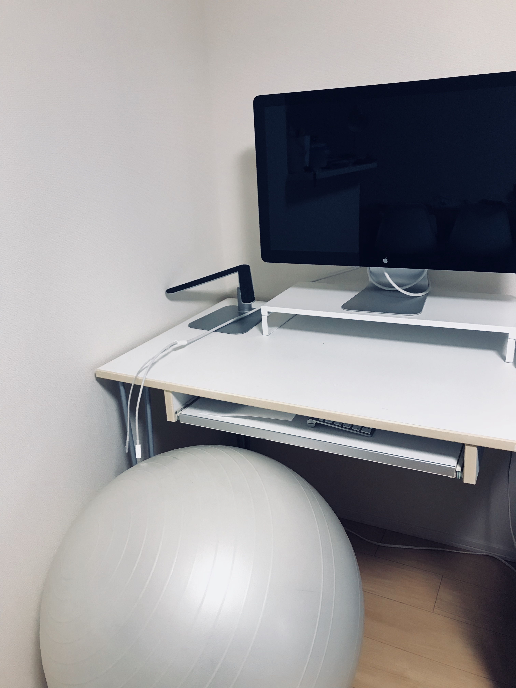

Ergohuman Fit
家の作業イスをアップデートした．
旧作業椅子

かれこれ数年間，バランスボールを椅子として使っていた．昔は全く問題なかったが，最近は，背中や腰が張るようになってきたのと，座面がムレるのが最大の敵だった．筋トレにもなるし一石二鳥だと感じていたのも，今となっては筋トレ効果も感じなくなってきていた．引っ越しして家が広くなったのもあり，購入を検討することにした．
人生で２度のギックリ腰を経験している身としては，作業環境は死活問題になりうる．
WORKAHOLIC へ
I'm at @WORKAHOLIC_web in 中央区, 東京都 https://t.co/z9zbWsQB9p
— tanakaworld (@_tanakaworld) June 3, 2018
割と高額な買い物，長く使う想定で失敗したくない．WORKAHOLICで試乗することにした．コンシェルジュが色々説明してくれた後，部屋中に置かれているチェアを自由に試しいくスタイル．
Ergohuman Fit
置いてある椅子ほぼ全部座ってみたところ，一番フィットしたのがエルゴヒューマン製品だった．オフィスでも使っていたのもあって，一番カラダに負荷を感じず自然な姿勢で作業できそうな気がした．
色々検討した結果，Ergohuman Fit を買った．
Ergohuman Fitはシリーズの中でもミドルサイズに設計され、小柄な女性から平均成人男性まで、幅広く日本人の体型にフィットするサイズになっています。
エルゴヒューマンの特徴でもある独立ランバーサポートはもちろん、機能やアジャスタビリティーをさらに進化させたニュースタンダードモデルです。
というモデルらしい．座面とフレームの色が選べる．派手な色と全部真っ黒は，自分の家にはマッチしない気がしたので，ホワイト/ホワイトが欲しかったが，そのモデルは１ヶ月〜２ヶ月待ちだった．皆考えることは同じらしい．
ネットで探せば出てくるだろうと思い，その場では買わずネットで探した．が，しかし，Amazon・楽天市場・中古椅子卸しなど探してもどこも在庫切れで，同じく１ヶ月〜２ヶ月待ちだった．結局，公式のオンラインショップで予約して気長に待つことにした．座面はウレタンとメッシュが選べ，後者を選択．
注文から約１ヶ月ほどで到着した．
作業イスが来た #Ergohuman #ErgohumanFit pic.twitter.com/qrg3eQkpQd
— tanakaworld (@_tanakaworld) July 7, 2018
感想
一週間くらい毎日使っていて，結論としては全く問題なく作業が捗る．
- 色はホワイト/ホワイトにしてよかった． Fit といえど部屋にある存在感はでかく，少しでも圧迫感はない方がよい．
- FIt はサイズがやや小さいので，身長180cm以上ある人は Fit でない方がいいかも．